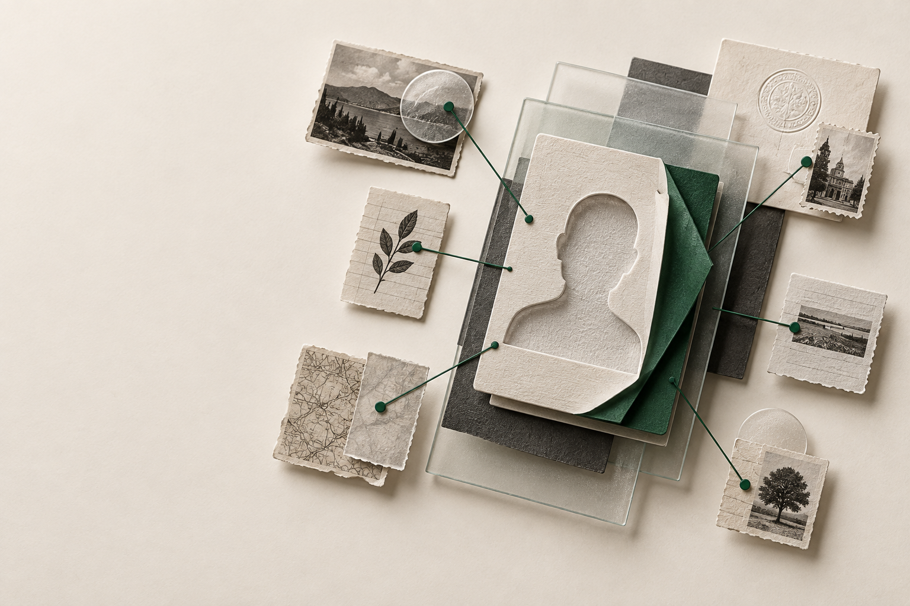

Collect claims, not mystery objects
Values arrive with typed evidence, source URLs, confidence, and provider identity.
Open-source entity enrichment · v0.7.0
Resolve people and companies without losing the source behind each field.

Provenance first
Enrichfold turns provider output into deterministic decisions while preserving what was observed, where, and when.
Values arrive with typed evidence, source URLs, confidence, and provider identity.
Stable rules select a suggested value and preserve every competing claim.
Conflicts and inferred claims are marked for review instead of silently passing.
Reserve provider units before execution and expose partial coverage when work is skipped or fails.
Search connected
Enrichfold searches Exa, Parallel, You.com, Tavily, Linkup, Seltz, TinyFish, Nimble, Browserbase, Serper, DuckDuckGo, and Treg. It merges duplicate URLs with explainable scores. Scrapefold calls the same search API and handles page retrieval by URL.
Search results remain sources. Use WebSearchProvider to map them into claims with evidence, then let ResearchEngine apply its review gates.
from enrichfold.search import SearchOptions, search
results = await search(
"example.com company",
SearchOptions(engines=("parallel", "tavily")),
)
for result in results:
print(result.url, result.score, result.engines)Treg connected
Use Treg's catalog for people search, company enrichment, email lookup, SEO, and social data through one token. TregClient preserves the original JSON, serving provider, call ID, and actual cost.
TregProvider brings a selected endpoint into your research pipeline. Your mapper chooses evidence-backed claims. Set a dollar ceiling for each call; provider run metadata keeps the receipt.
from enrichfold import TregClient
# Reads TREG_TOKEN; install enrichfold[treg]
response = await TregClient().call(
"treg.people.search",
request={
"company_domain": "example.com",
"title": "CTO",
"limit": 5,
},
max_cost_usd=0.05,
timeout_s=90,
)
people = response.data["output"]["people"]Keenable connected
The optional Keenable adapter discovers sources. Your mapper decides which results become claims, so search output never masquerades as verified fact.
from enrichfold import (
Claim, Entity, Evidence, KeenableProvider,
ProviderSpec, ResearchEngine,
)
def map_results(entity, results):
for item in results:
yield Claim(
field="summary",
value=item["description"],
kind="inferred",
evidence=Evidence(
source_url=item["url"],
observed_at=item["acquired_at"],
confidence=0.8,
provider="keenable",
),
)
provider = KeenableProvider(
lambda entity: f'{entity.identifiers["domain"]} company',
map_results,
)
result = ResearchEngine([
ProviderSpec("keenable", provider, reserved_units=1),
]).run(Entity.company(domain="example.com"))Get started
Install the Python package, connect the providers you trust, and keep review decisions in your application.